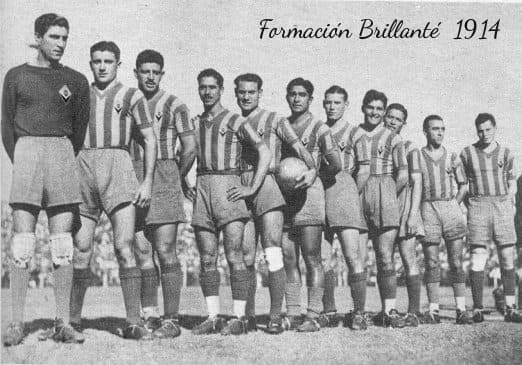
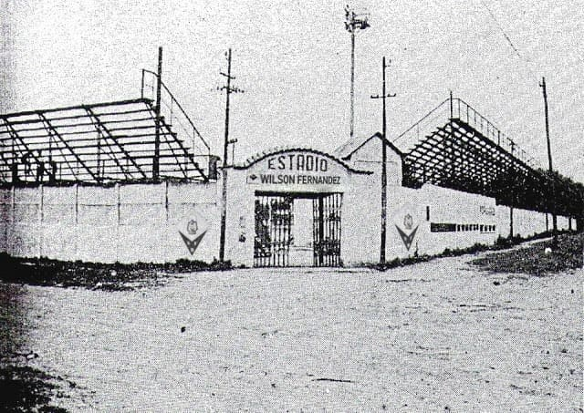

Historia del club
La historia de este proyecto eterno comienza en el marco del torneo intercolegial de fútbol LICA, a mediados del año 1914. En el mismo, nuestros fundadores competían para el Instituto Saint-Exupery, junto con las demás divisiones etarias del colegio. Fieles creyentes de una actitud y rectitud deportiva basadas en el respeto, la fraternidad y la solidaridad, los promotores de este club (en aquél entonces inimaginado) decidieron terminar con las pendencias y arbitrariedades de un equipo que no comprendía ninguno de los principios anteriormente mencionados, y solicitaron a los directivos del instituto el permiso para conformar un equipo paralelo que se rigiera por sus propios idearios. Obtenida aquella licencia, comenzaba a germinar un sentido de pertenencia entre los integrantes de aquél primer grupo de estoicos del deporte.
Las fechas pasaron y estos amigos conseguían pulir la técnica de su juego en equipo, al punto de impresionar a sus profesores; no sólo por su habilidad de grupo, sino por el respeto que profesaban por sus contrincantes. No era una rivalidad visceral la que expresaban, sino una competitividad que vehiculizaba el desarrollo de sus capacidades deportivas. A su vez, equipo original vio aumentadas sus filas por más jóvenes que, hartos del ambiente tóxico del torneo (y, sobre todo, del equipo oficial del instituto), vieron en las actitudes de nuestros fundadores los ideales que, hasta el día de hoy, siguen siendo el verdadero baluarte del club.
El evento de verdadera consagración llegó, al fin. En los primeros días de diciembre de aquél mítico año: un derrotado, pero aún soberbio equipo oficial propuso un partido al, por entonces, floreciente Brillanté. Los rayos del sol encontraron a ambos equipos batiéndose en un partido emocionante que culminó con la victoria heroica de aquél equipo prístino.
A la victoria le siguió la leyenda, y a esta, la necesidad de inmortalizar al equipo y sus valores. ¿Qué mejor manera de hacerlo que a través del deporte? A través de él aleccionarían a todo aquél que viera el ejercicio físico y la competencia cortés como una de las vías para alcanzar el desarrollo del espíritu y el cuerpo humano a través de la cooperación y la fraternidad. El resto es historia. Con el nombre vinieron los colores, el himno y todo aquello que hoy día es representativo de este proyecto eterno.
Con más de cien años de trayectoria, el Club Social y Polideportivo Brillanté se precia en contar con una amplia variedad de medios e instalaciones deportivas y recreativas para el cultivo del bienestar comunitario como fin transversal de este proyecto. Su infraestructura es ideal para el desarrollo de sus disciplinas, ya que cuenta con los espacios especializados tanto en su sede y complejo Polideportivo, ubicado en Avenida Pedro Goyena 1136. En dichas instalaciones, los socios encontrarán canchas de básquetbol, fútbol, hockey y rugby (con sus respectivas variantes), así como salones para patinaje artístico y diversos eventos culturales como peñas, exposiciones, entre otras. A esto se le suman las canchas de tenis, las instalaciones de gimnasia aeróbica y anaeróbica, así como su pileta olímpica. Así, el Club dispone en su sede de variados ámbitos utilizados para las múltiples actividades de matiz social, cultural y educativo.
Datos del Club
-
Nombre Completo
Club Social y Polideportivo Brillanté
-
Fecha de fundación
Algún día del 1914
-
Himno
-
Sede
Tomás Démian Churchies
-
Estadio
Wilson Fernández
-
Dirección
La Churchiescueva
-
Teléfono
1234-5678
-
Número de socios
1917
-
Camiseta Oficial
Franjas horizontales negras y grises, con una franja vertical amarilla en el lado izquiedo
-
Camiseta Alternativa
Hay camiseta alternativa, pero es indescriptible por su belleza
-
Proveedor de indumentaria
Algún galpón de once
-
Main sponsor
Swallow Party